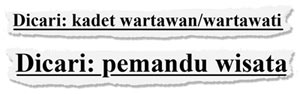

Lowongan kerja #1
 Dari Brendon:
Dari Brendon:
I’ve been looking up job ads in the online Indonesian newspapers. I’m just familiarising myself with occupations at the moment, and I found these two:
I can’t find ‘pemandu’ in the dictionary. ‘Wisata’ means it has something to do with tourism, bukan? Tolong membantu saya.
Re: Lowongan kerja #1
 Dari Dewi:
Dari Dewi:
Hehehe, bahasa Indonesianya Brendon sangat formal, khususnya buat chat – you should just say ‘Tolongin aku dong!’
Untuk mencari kata ‘pemandu’, kamu harus cari kata dasarnya, yaitu pandu.
It’s like the ‘me-’ verbs. Remember how they work?
- pelihara memelihara pemelihara
- putus memutus pemutus
- tipu menipu penipu
There are exceptions, such as tugas becomes petugas (not penugas), and tani becomes petani.
Kalau mau berlatih, ada latihan di sini.
Oh, ini foto menarik. Mungkin tidak ada pekerjaan ini di Australia? Lol.
Reproduced with the permission of Katharina Popp.
Komentar
 Re: Re: Lowongan kerja, dari Brendon pada jam 07:42.
Re: Re: Lowongan kerja, dari Brendon pada jam 07:42.
Brendon: Trims ya Dewi... I think I should keep using bahasa baku/formal because I want to apply for jobs, so I need to practise using formal Indonesian.
Komentar
 Re: Lowongan kerja, dari IndoGuRu pada jam 07:42.
Re: Lowongan kerja, dari IndoGuRu pada jam 07:42.
I think it's a good idea, Brendon, to keep practising your bahasa baku as practice for your job applications.
What do others think of Brendon's intention to keep using formal Indonesian?
What do you think the response might be if he used colloquial (informal) language in a formal situation?
Can you think of an example of where you or someone else used language that was inappropriate to the context?